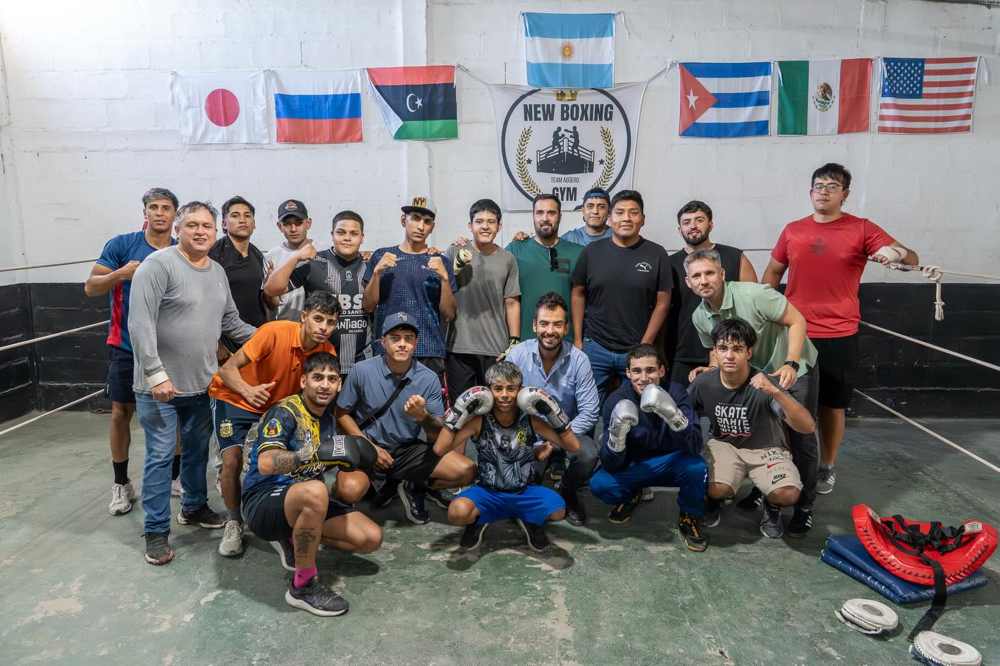

Exequiel
y la Gente
Escucha activa, presencia real y compromiso con cada catamarqueño y catamarqueña.
visitadas
atendidos
presentados
recorridos
Cerca de la gente, siempre
Desde el primer día de mandato, Exequiel Moreno tomó la firme decisión de no gobernar desde un escritorio. Su metodología de trabajo se basa en la escucha activa: recorrer cada departamento, sentarse con los vecinos y entender de primera mano cuáles son sus necesidades.
Este vínculo cercano con la comunidad no es solo una estrategia política, sino un valor fundamental que guía cada proyecto y cada intervención legislativa. La gente de Catamarca es su principal fuente de información y de inspiración.
Escribinos arrow_forward
Lo que nos guía
Transparencia
Rendición de cuentas clara y accesible para todos los ciudadanos de Catamarca.
Participación
La ciudadanía como protagonista activa del proceso democrático y legislativo.
Compromiso
Presencia constante en el territorio, con respuestas concretas a cada demanda.
Lo que dice la gente
"Exequiel vino a nuestra comunidad, escuchó nuestros problemas con el agua y en dos semanas teníamos respuesta. Es de los pocos políticos que cumple lo que promete."
"Gracias a su gestión pudimos conseguir el equipamiento que necesitaba nuestro centro de salud. La gente del departamento lo recuerda y lo valora enormemente."
"Lo que más me sorprendió fue que vino solo, sin prensa, a recorrer el barrio. Se sentó con los vecinos a tomar mate y escuchó de verdad. Eso marca la diferencia."
Sumate a nuestra lista de difusión!
Recibí las últimas novedades, proyectos legislativos y actividades en tu correo.